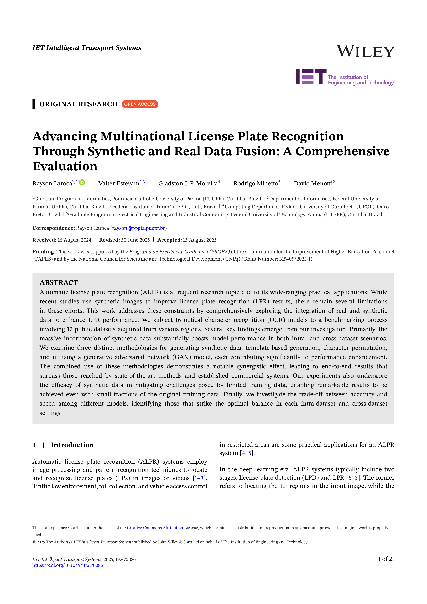

|
|
|
|
|
|
1 Pontifical Catholic University of Paraná, Curitiba, Brazil
| 2 Federal University of Paraná, Curitiba, Brazil | 3 Federal Institute of Paraná, Irati, Brazil |
| 4 Federal University of Ouro Preto, Ouro Preto, Brazil | 5 Federal University of Technology-Paraná, Curitiba, Brazil |
|
|
Examples of the template-based LP images we created for this work. Notably, any sequence can be generated for each template. The background and character images were gathered from the internet. During training, these LP images are subjected to various transformations to introduce variability. |
Paper
|  | Rayson Laroca, Valter Estevam, Gladston J. P. Moreira, Rodrigo Minetto, David Menotti Advancing Multinational License Plate Recognition Through Synthetic and Real Data Fusion: A Comprehensive Evaluation IET Intelligent Transport Systems, vol. 19, no. 1, p. e70086, 2025. |
|
Abstract. Automatic license plate recognition (ALPR) is a frequent research topic due to its wide-ranging practical applications. While recent studies use synthetic images to improve license plate recognition (LPR) results, there remain several limitations in these efforts. This work addresses these constraints by comprehensively exploring the integration of real and synthetic data to enhance LPR performance. We subject 16 optical character recognition (OCR) models to a benchmarking process involving 12 public datasets acquired from various regions. Several key findings emerge from our investigation. Primarily, the massive incorporation of synthetic data substantially boosts model performance in both intra- and cross-dataset scenarios. We examine three distinct methodologies for generating synthetic data: template-based generation, character permutation, and utilizing a generative adversarial network (GAN) model, each contributing significantly to performance enhancement. The combined use of these methodologies demonstrates a notable synergistic effect, leading to end-to-end results that surpass those reached by state-of-the-art methods and established commercial systems. Our experiments also underscore the efficacy of synthetic data in mitigating challenges posed by limited training data, enabling remarkable results to be achieved even with small fractions of the original training data. Finally, we investigate the trade-off between accuracy and speed among different models, identifying those that strike the optimal balance in each intra-dataset and cross-dataset settings. |
|
|
|
|
Related Work
This work builds upon our earlier contributions to ALPR, which include the introduction of the RodoSol-ALPR dataset [1], investigations into dataset bias [2, 3], and explorations of model fusion strategies [4]:
[1] – R. Laroca, E. V. Cardoso, D. R. Lucio, V. Estevam, and D. Menotti, “On the cross-dataset generalization in license plate recognition,” in International Conference on Computer Vision Theory and Applications (VISAPP), pp. 166-178, Feb 2022. [SciTePress] [arXiv]
[2] – R. Laroca, M. Santos, V. Estevam, E. Luz, and D. Menotti, “A first look at dataset bias in license plate recognition,” in Conference on Graphics, Patterns and Images (SIBGRAPI), pp. 234-239, Oct 2022. [IEEE Xplore] [arXiv]
[3] – R. Laroca, V. Estevam, A. S. Britto Jr., R. Minetto, and D. Menotti, “Do We Train on Test Data? The Impact of Near-Duplicates on License Plate Recognition,” in International Joint Conference on Neural Networks (IJCNN), pp. 1-8, June 2023. [IEEE Xplore] [arXiv]
[4] – R. Laroca, L. A. Zanlorensi, V. Estevam, R. Minetto, and D. Menotti, “Leveraging Model Fusion for Improved License Plate Recognition,” in Iberoamerican Congress on Pattern Recognition (CIARP), pp. 60-75, Nov. 2023. [Springer] [arXiv]
Acknowledgments
This work was supported by the Programa de Excelência Acadêmica (PROEX) of the Coordination for the Improvement of Higher Education Personnel (CAPES) and by the National Council for Scientific and Technological Development (CNPq) (Grant Number: 315409/2023-1). The Quadro RTX 8000 GPU used for this research was donated by the NVIDIA Corporation.